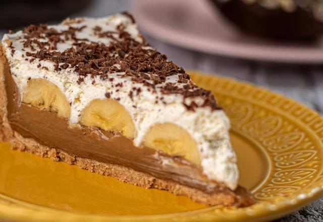

Home
Banoffee Recipe

Banoffee is a delicious filled dessert, containing a milk biscuit base and a tasty banana and dulce de leche filling, topped with a beautiful layer of whipped cream.
The Banoffee recipe requires few ingredients and is extremely easy to make.
Ingredients
- Milk biscuits
- Bananas
- Butter
- Dulce de leche
- Whipped Cream
Steps
- Blend the biscuits in a blender untill they become flour
- Using your hands, mix the butter and biscuit flour in a pan until the butter melts completely while shaping the dough into the shape of the pan
- Bake in the oven for 20 minutes
- Cut the bananas into slices
- Place the banana slices and dulce de leche in the pan with the dough, alternating between them in layers
- Top with whipped cream and refrigerate overnight